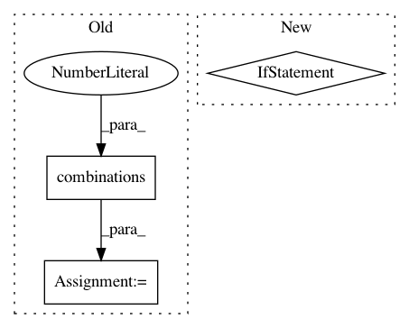

a3fd728f8cbf7c4f278681c36f7f668def787376,tests/test_bow.py,,test_codoc_frequencies,#Any#Any#Any#,90
Before Change
df = bow.bow_stats.codoc_frequencies(dtm, proportions=proportions)
assert isinstance(df, dict)
assert len(df) == math.factorial(n_vocab) / math.factorial(2) / math.factorial(n_vocab - 2)
for w1, w2 in itertools.combinations(range(n_vocab), 2):
n = df[(w1, w2)]
if proportions:
assert 0 <= n <= 1
else:
assert 0 <= n <= n_docs
def test_codoc_frequencies2():
dtm = np.array([
[0, 2, 3, 0, 0],
[1, 2, 0, 5, 0],
After Change
cooc = bow.bow_stats.codoc_frequencies(dtm, proportions=proportions)
if matrix_type == 1:
assert issparse(cooc)
else:
assert isinstance(cooc, np.ndarray)
assert cooc.shape == (n_vocab, n_vocab)
if matrix_type == 1:
cooc = cooc.todense()
In pattern: SUPERPATTERN
Frequency: 3
Non-data size: 3
Instances
Project Name: WZBSocialScienceCenter/tmtoolkit
Commit Name: a3fd728f8cbf7c4f278681c36f7f668def787376
Time: 2019-08-23
Author: markus.konrad@wzb.eu
File Name: tests/test_bow.py
Class Name:
Method Name: test_codoc_frequencies
Project Name: tensorflow/datasets
Commit Name: 2b867a66ea0938ea281b5e6ea37ae3e18e15ae19
Time: 2018-12-04
Author: epot@google.com
File Name: tensorflow_datasets/testing/dataset_builder_testing.py
Class Name: TestCase
Method Name: test_download_and_prepare_as_dataset
Project Name: Qiskit/qiskit-aqua
Commit Name: 2aae12b10a3411009a2802a077bb8c6c0365b6ad
Time: 2020-08-28
Author: 31178928+t-imamichi@users.noreply.github.com
File Name: qiskit/aqua/operators/converters/abelian_grouper.py
Class Name: AbelianGrouper
Method Name: _commutation_graph